Installing Python and JupyterLab
Last updated on 2026-01-22 | Edit this page
Estimated time: 30 minutes
Overview
Questions
- How do I install Python?
- How do I launch Jupyter Lab?
Objectives
- Download and install Python.
- Install the JupyterLab and Pandas packages.
- Learn about folders and files on your computer.
- Create a folder to hold the Jupyter notebooks you will create during this workshop series.
Getting Started with Python
In this activity, you will install Python to your personal computer. You only need to install and configure Python once for this workshop, so future lessons will assume that you already have Python installed.
Jupyter Lab is a special Python library with an integrated web user interface from Project Jupyter that enables one to work with documents and activities such as Jupyter notebooks, text editors, terminals, and even custom components in a flexible, integrated, and extensible manner.
Jupyter Notebooks
Jupyter notebooks are common in data science and visualization and serve as a convenient common-denominator experience for running Python code interactively where we can easily view and share the results of our Python code.
There are other ways of editing, managing, and running code, but Jupyter notebooks let us execute and view the results of our Python code immediately within the notebook.
Installing Python
The easiest way to install Python and JupyterLab will depend on your operating system.
- If you have a Mac laptop, click here.
- If you have a Windows laptop, click here.
Installing Python: MacOS
Before installing Python on a Mac, you will need to know the type of processor it has.
Depending on when you bought your laptop, your Mac may have an Apple Silicon chip or an Intel Chip. For Python to work correctly, you must install the version that corresponds to your laptop’s chip.
Finding Your Processor Chip Type
- Click on the Apple icon in the top left corner of your screen.
- Select About this Mac.
- Look at the line labeled Chip.
- If your chip name begins with Apple, it is an Apple Silicon processor.
- If your chip name begins with Intel, it is an Intel processor.

Downloading Python
To make installation faster and easier, you will be downloading Python through an environment management tool called Miniconda.
Go to the Anaconda/Miniconda download page.

From the Miniconda column, select the Graphical installer download that corresponds to your chip type.
For example, if you have a Mac with an Apple Silicon chip, you should select the 64-Bit (Apple silicon) Graphical Installer.
Double-click to download the file to your computer.
Installing Miniconda
Once the download has completed, double-click the Miniconda .pkg file in your Downloads folder.
A graphical installer will launch.
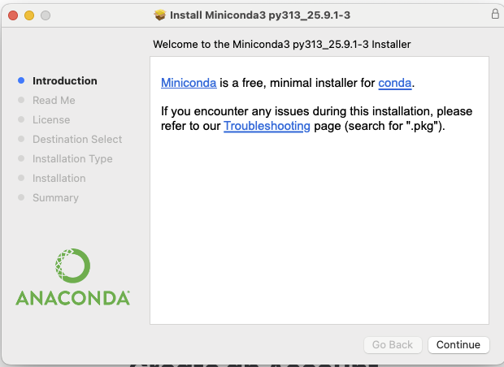
Press Continue to nagivate through the installer. Click Agree to the terms of the End User License Agreement.
When prompted to select a destination for your Python installation, select “Install for all users of this computer”.
This will install Miniconda (and Python) to the
/opt/bin/miniconda folder. Click Continue.

When prompted, click Install.

Wait while Miniconda installs. This should take fewer than 5 minutes.

When the installation has finished, close the installer window by clicking Close.
Installing Jupyter Lab
Look for the magnifying glass icon in the top right corner of your screen. Search for Terminal and click the icon to launch the Terminal application.

The Terminal (or command line) is a special application that allows you to talk to software on your computer through textual commands. Some applications can only be accessed through the command line.
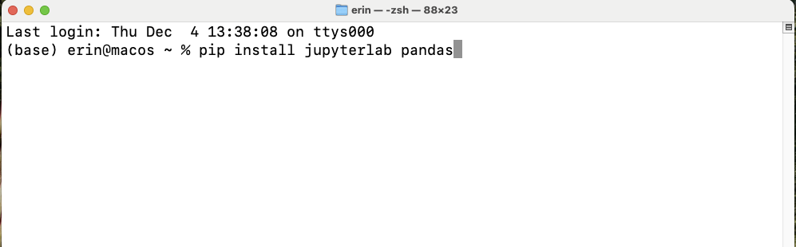
Type the command pip install jupyterlab pandas and press
the Enter key.
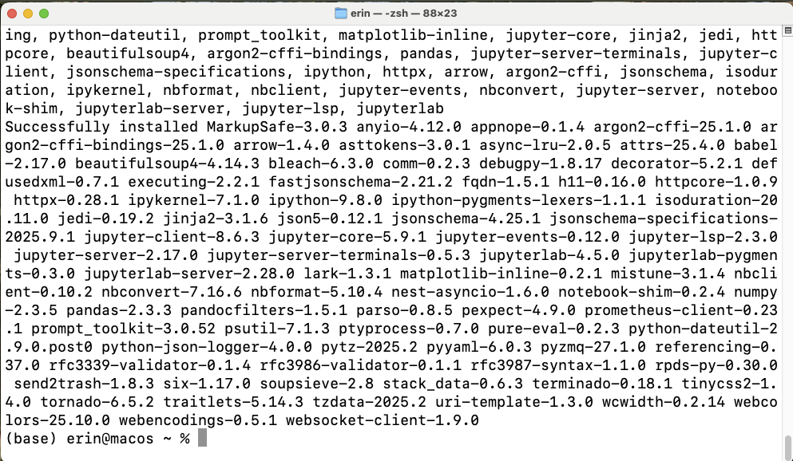
When the installation has finished, you will see a message like one above. You will see your username followed by a blinking cursor, which means that the terminal is waiting for another command.
Launching Jupyter Lab
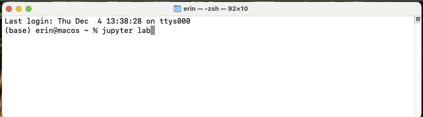
Congratulations! You’ve installed Jupyter Lab. You will not need to perform these installation steps again.
In the future you can launch Juptyer Lab by doing the following:
- Search for Terminal.
- Open Terminal.
- Type
jupyter labinside the terminal and press the Enter key.
JupyterLab will launch in a new tab in your default web browser.
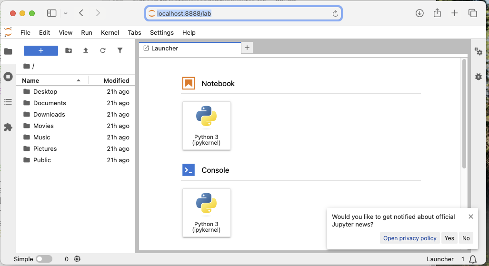
After everyone has installed Jupyter Lab, we will talk about how to create, edit, and save Python projects.
Installing Python: Windows
Downloading Python for Windows
To make installation faster and easier, you will be downloading Python through an environment management tool called Miniconda.
Go to the Anaconda/Miniconda download page.

Click the Miniconda link on the right to download the file to your computer.
Installing Minconda
Locate the downloaded file (it will often go to your Downloads folder by default) to start the installation process. Double-click it.
You will see a launcher like this open.
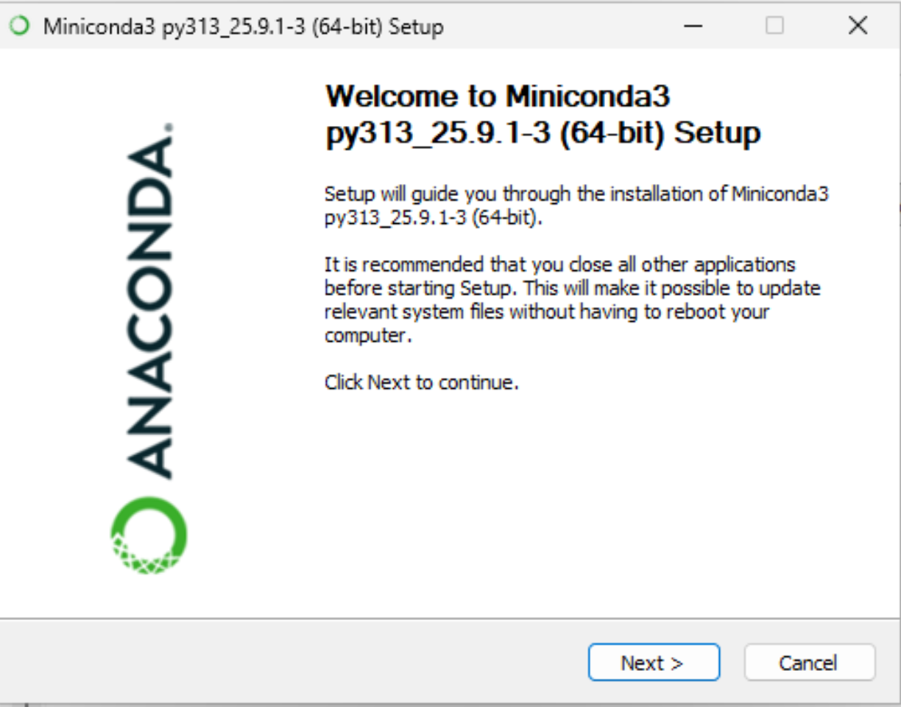
Click Next to proceed to the next screen of the installer.
Read through Miniconda’s End User License Agreement (EULA) and click I Agree to agree to the terms.
You will be prompted to select for which users Miniconda should be installed, either
- Just Me (Recommended)
- All Users

Select Just Me and click Next.
Next, you will be prompted to select where Miniconda should be installed. The default location, in your home directory, is appropriate.

When asked about Advanced Installation Options make sure to check:
- Create shortcuts
- Register Miniconda3 as my default Python 3.13
Leave the other boxes unchecked.
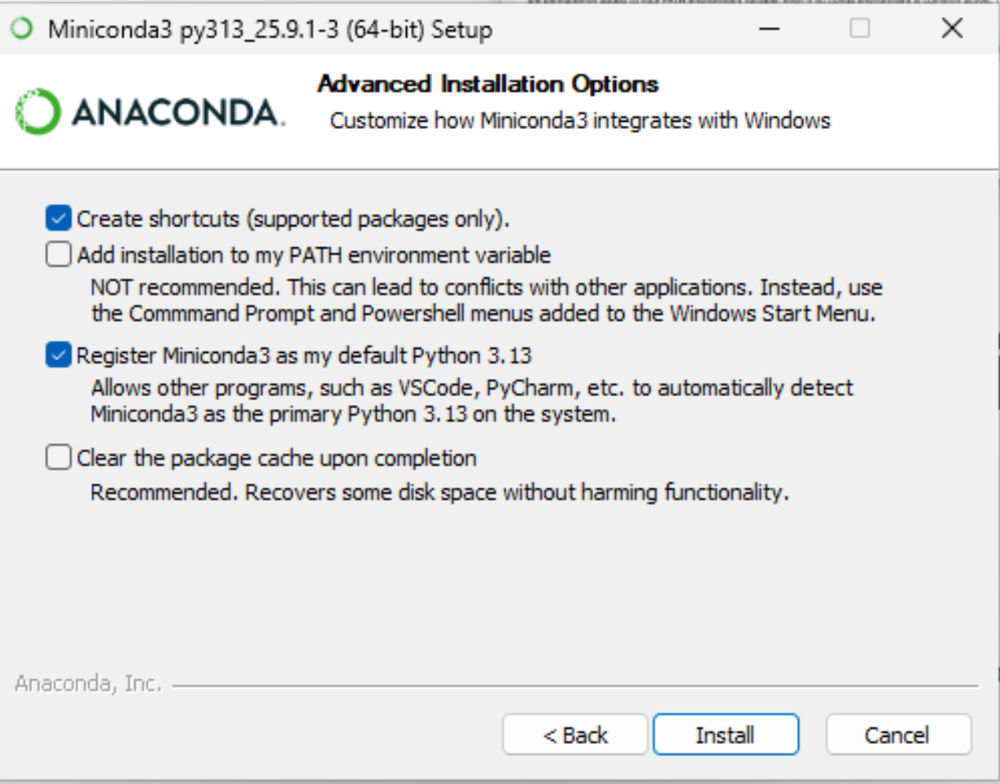
Click Install to install Miniconda. This should take no more than five minutes.
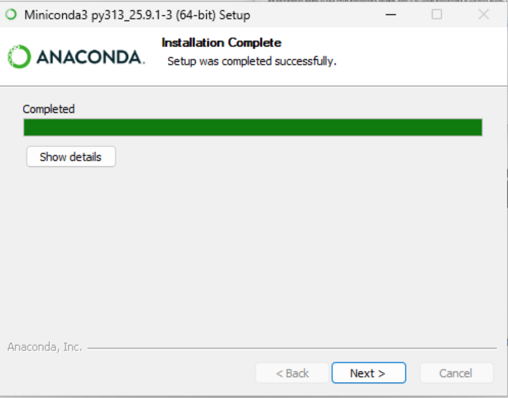
When the application has finished installing, click Next.

You will reach a final screen. Uncheck both boxes (you can read up on Miniconda later) and click Finish.
Installing Jupyter Lab
Click the symbol on the bottom of your screen or press the Windows ⊞ key on your keyboard. This will open up the Windows Start Menu.
In the Search box, type Anaconda Prompt. You should see a result like this:
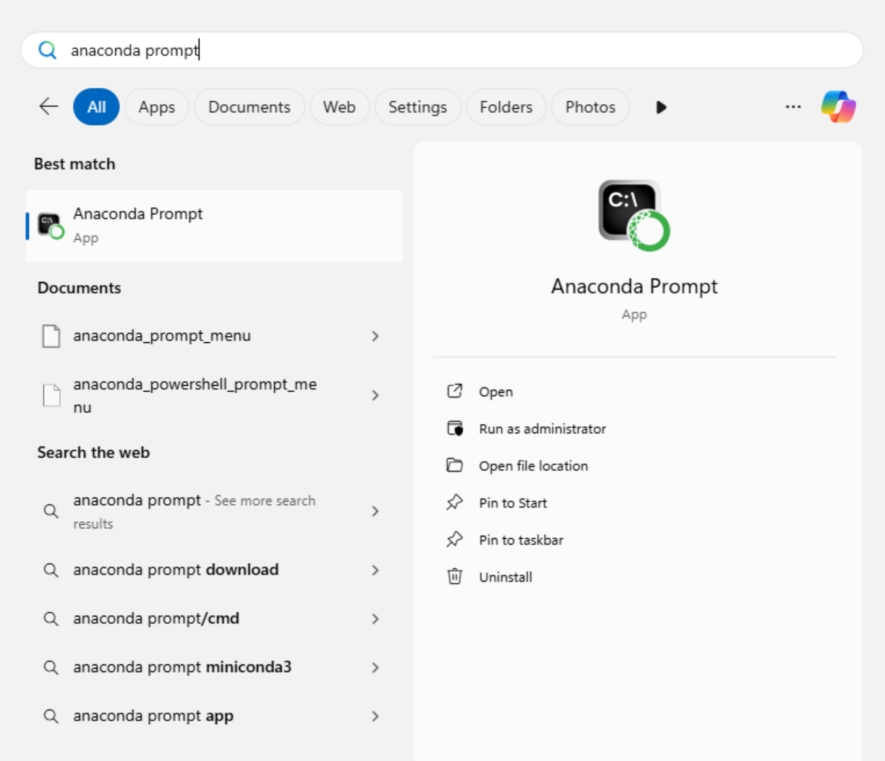
Click Pin to taskbar, as you’ll need this later.
Now, click on the Anaconda Prompt icon. A black screen with a flashing character will open
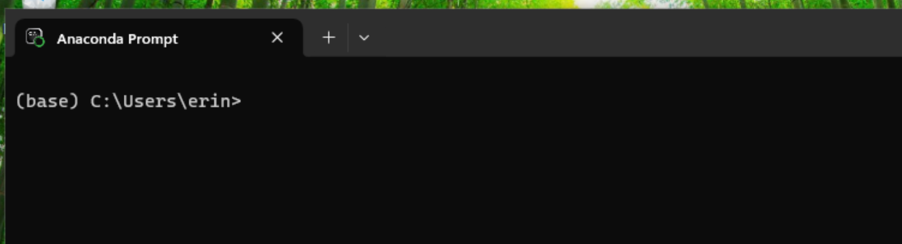
Inside the prompt window, type
pip install pandas jupyterlab and press the
Enter key.
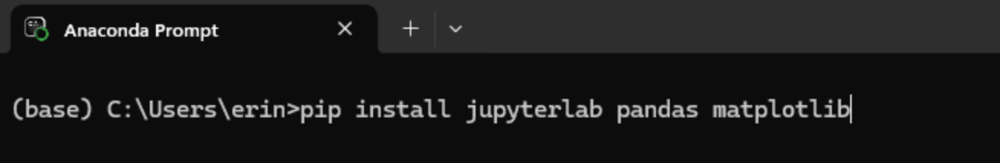
The packages required for this workshop will install.
After the installation finishes, the cursor will flash again. Congratulations, you have installed Python and Jupyter Lab!
Launching Jupyter Lab
Congratulations! You’ve installed Jupyter Lab. You will not need to perform these installation steps again.
In the future you can launch Juptyer Lab by doing the following:
- Open Anaconda Prompt.
- Type
jupyter labinside the terminal and press the Enter key.

JupyterLab will launch in a new tab in your default web browser.
After everyone has installed Jupyter Lab, we will talk about how to create, edit, and save Python projects.
The JupyterLab Interface
JupyterLab has many features found in traditional integrated development environments (IDEs) but is focused on providing flexible building blocks for interactive, exploratory computing.
The JupyterLab Interface consists of the Menu Bar, a collapsable Left Side Bar, and the Main Work Area which contains tabs of documents and activities.
Menu Bar
The Menu Bar at the top of JupyterLab has the top-level menus that expose various actions available in JupyterLab along with their keyboard shortcuts (where applicable).
A screenshot of the default Menu Bar is provided below.

Main Work Area
The main work area in JupyterLab enables you to arrange documents (notebooks, text files, etc.) and other activities (terminals, code consoles, etc.) into panels of tabs that can be resized or subdivided. A screenshot of the default Main Work Area is provided below.
If you do not see the Launcher tab, click the blue plus sign under the “File” and “Edit” menus and it will appear.

Left Sidebar
The left sidebar contains a number of commonly used tabs. Most importantly for us, it has a file browser (showing the contents of the directory where the JupyterLab server was launched). The directory where the JupyterLab server was launched will function as your working directory. This matters because if you want to reference other data files in your code, JupyterLab will look for them here by default. A screenshot of the default Left Side Bar is provided below.

The left sidebar can be collapsed or expanded by selecting “Show Left Sidebar” in the View menu or by clicking on the active sidebar tab.
Step 1: Click on view in the menu bar. This opens a drop down menu of options. Select “File Browser”

Step 2: When you click on File Browser, this will open the file directory as shown above.
What is a Working Directory?
- A working directory (or current working directory) is the current folder or location on a computer’s file system where a program operates.
- The working directory is the location where Python will look for files you want to load and where it will put any files you save.
- You will write your code in Jupyter Notebooks, and save the code
file for later in a folder. Jupyter Notebooks are a special file type
that end in
.ipynb. - It’s a good idea to save your code files in the same folder where
you save any data files that you want to analyze. In this workshop your
data files will be in the open source spreadsheet format
.csv.
Create a Folder for This Workshop
When you run the command jupyter lab in Terminal (Mac
OS) or Anaconda Prompt (Windows), Jupyter Lab will launch in your home
directory.
Inside your Documents folder, create a new folder named PythonWorkshop.

- First, click on your Documents folder in the File Browser on the
left.
- You should now see the contents of your Documents or My Documents folder.
- Next to the blue plus botton at the top left of the File Browser,
you will see a folder icon.
- Click the New Folder icon.
- Name your new folder PythonWorkshop.
Navigate to that folder in the JupyterLab File Browser by clicking on it. You will use this folder in all future workshop sessions.
Create and Save a Jupyter Notebook File to your Working Directory
In the central pane of the Jupyter Lab interface, click on Python 3 in the Launcher to create a new Jupyter Notebook:
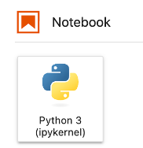
Use the menu or save icon to save this blank notebook. Make sure to
name it something helpful! For example, PythonWorkshop_1 or
PythonDay1. Notice that JupyterLab will append
.ipynb to the end of the name of the notebook. This is the
file extension for Jupyter Notebooks.
In the future, you can open your notebooks by navigating to the PythonWorkshop folder through the File Browser pane in JupyterLab.
You can see (and modify) this folder in File Explorer (Windows) or Finder (MacOS) too. You might, for example, want to add data to this folder, or add a data subfolder. Note, however that you cannot open your Python notebooks (.ipynb) by clicking on them from File Explorer or Finder. You must open them through the JupyterLab File Browser.
Verify your Working Directory
You can verify that you have the correct working directory by using what’s called a magic command. Use the %pwd magic command within a code cell to print the current working directory. The output will display the current directory path.
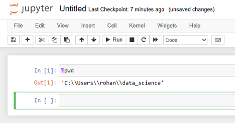
This magic command passes the “print working directory” command to your computer. Learn more about pwd here (https://superbasics.beholder.uk/command-line/example-pwd/).
- JupyterLab is an application for running, managing, and organizing Python code in files called Jupyter notebooks.
- You will only need to install JupyterLab once for this workshop.
- Your current working directory determines where programs are run and how filepaths are interpreted.